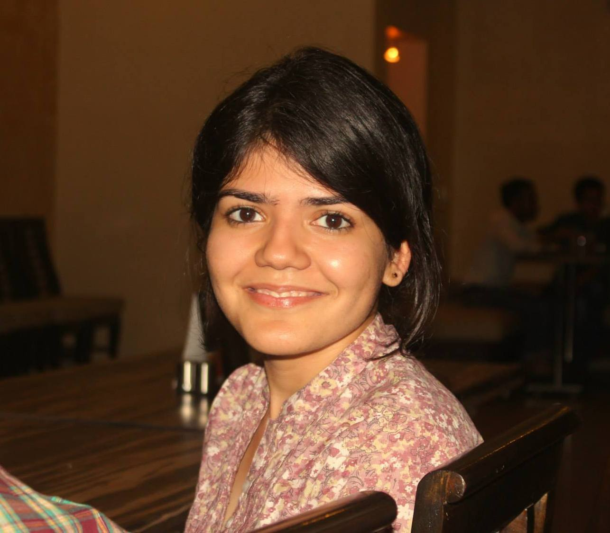

I am a graduate student of Ecology and Evolution at the Indian Institute of Science Education and Research, Pune. My current research tries to understand the patterns and underlying mechanisms of how individuals of a species distribute themselves in an available niche. I analyse large, systematically collected primary datasets by developing computation-based statistical tools. I mostly use R to write my scripts, with some patches in C++ and Python. I'd love to explore Ecological Acoustics!